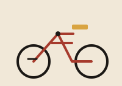
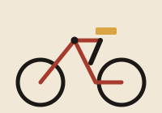
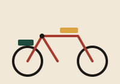

Route library
Five graded trails around the FCT
Distance and elevation figures below are measured from club GPS logs, not estimated. Each elevation chart reads left to right, start to finish.
Loading trail data…
Buying guide
Match the eBike to the route, not the other way around
The single most common member mistake is buying a commuter eBike for city errands, then finding it underpowered on Bwari's climbs. Use this table before your first purchase.

Commuter Class
Light, efficient, built for flat lakeside paths and weekday errands.

Trail / Gravel Class
Mid-drive torque and wider tires for granite switchbacks and loose gravel.

Long-Range / Cargo Class
Extra battery capacity for the club's longest backroad routes and group support duty.
| Class | Best for | Typical range | Motor | Club note |
|---|---|---|---|---|
| Loading specifications… | ||||